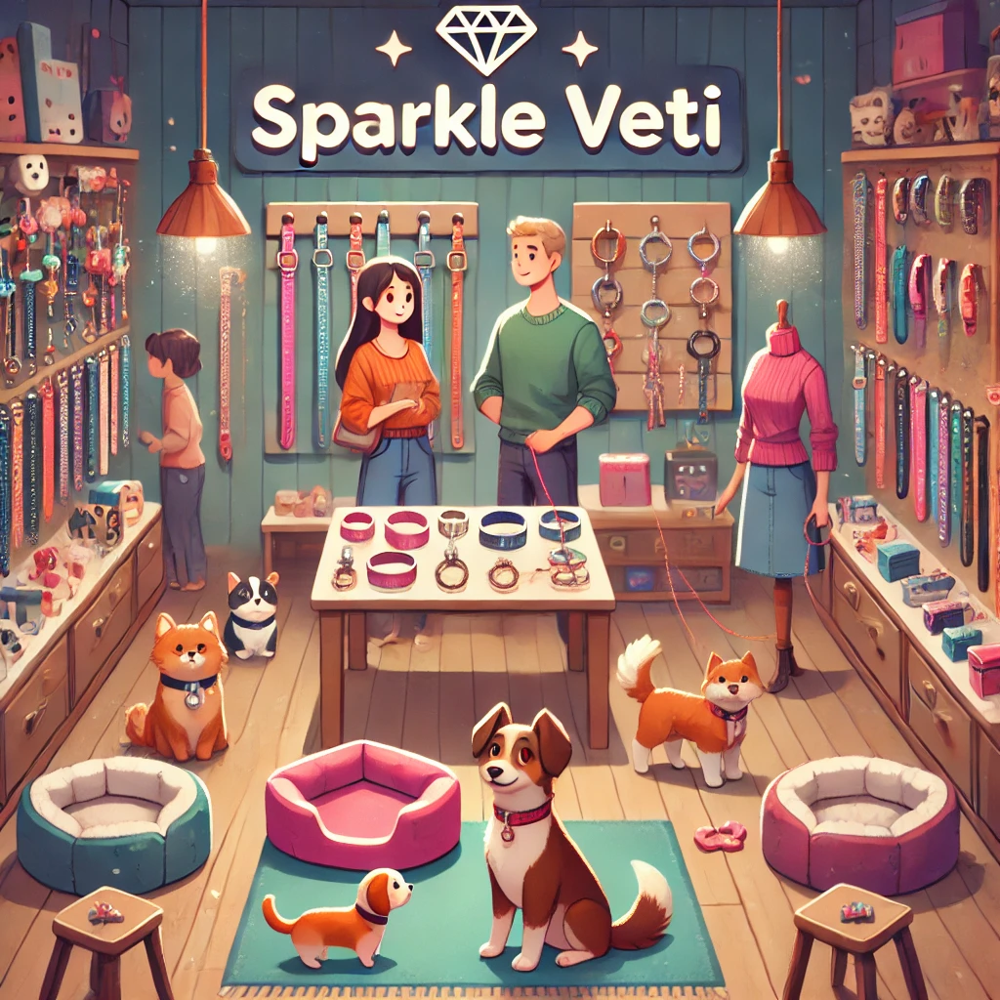

"¡Tu mascota merece lo mejor! Accesorios únicos para su felicidad."
Historia
Sparkle Veti nació del amor de Elena Vargas por las mascotas y su deseo de darles accesorios que reflejen su personalidad. Mientras trabajaba en una clínica veterinaria, notó que muchos dueños querían más que lo básico: querían estilo, comodidad y calidad para sus amigos peludos. Así creó Sparkle Veti, una tienda donde cada collar, cama y juguete tiene un toque especial. Más que un negocio, es un espacio donde el amor por los animales brilla en cada detalle.